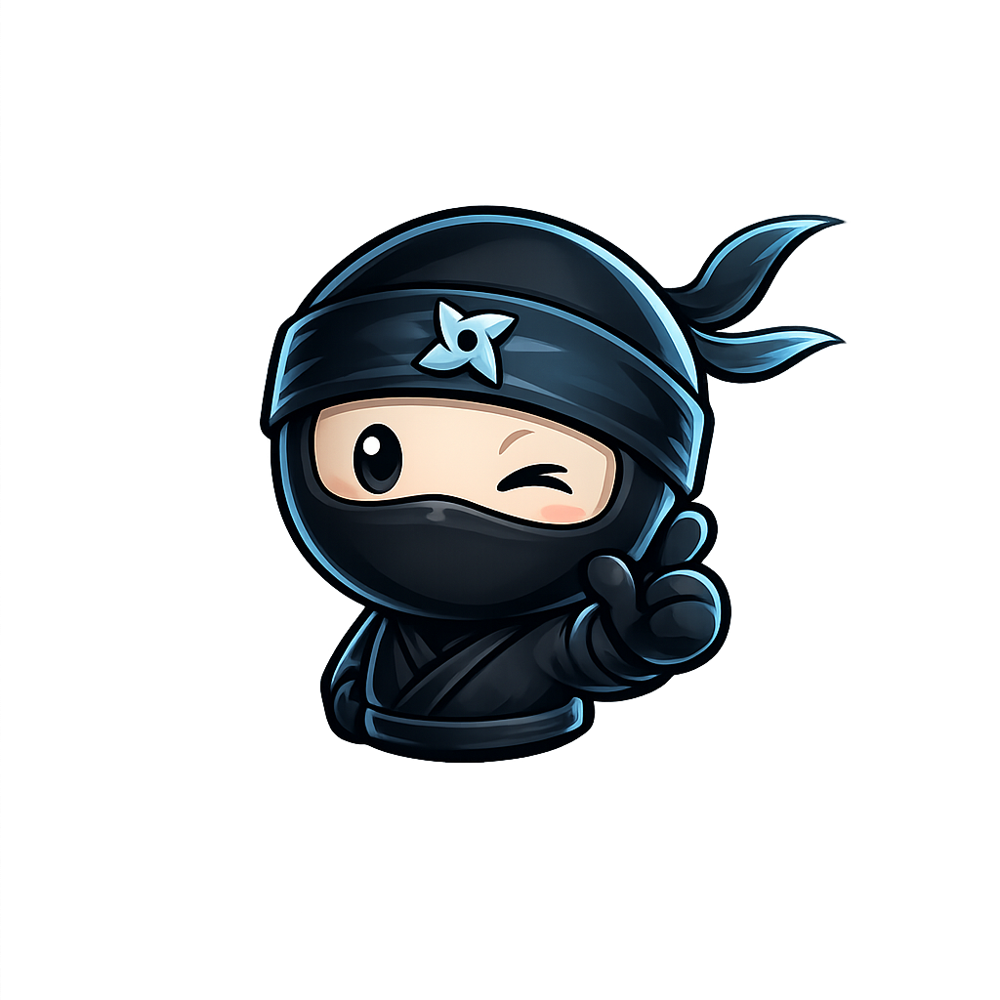

01
NONPROFIT / BRAND / STRATEGY
Chronic Illness Warrior Foundation
A mission-driven foundation concept built around advocacy, practical support, thoughtful branding, and the belief that no warrior should fight alone.
Foundation in development
BUILDER / CREATOR / DREAMER
I create distinctive websites, digital experiences, and brand-driven projects for businesses, creators, and ideas that deserve to stand out.
NillaNinja is the creative identity behind my work in web design, digital experiences, branding, AI-assisted workflows, and practical problem-solving.
My background in leadership, operations, entrepreneurship, and technology helps me approach projects from both sides: how they should look, and how they need to work in the real world.
NONPROFIT / BRAND / STRATEGY
A mission-driven foundation concept built around advocacy, practical support, thoughtful branding, and the belief that no warrior should fight alone.
Foundation in developmentINTERACTIVE WEB / MOTION / FRONT-END
A cinematic, responsive hero experience built with lightweight HTML, CSS, and JavaScript, featuring motion, depth, spotlight interaction, and polished transitions.
View live experience ↗DIGITAL PRODUCTS / INTERACTION / CODE
A growing collection of animated loading systems, hero experiences, and reusable website assets built with lightweight HTML, CSS, and JavaScript.
Explore the asset library ↗SMALL BUSINESS / WEB / SECURITY
A small-business website project covering design, content, hosting support, security cleanup, recovery, and ongoing technical problem-solving.
Visit client website ↗Premium loading screens, animated website assets, UI components, and interactive designs built for creators who want more than ordinary.
Explore My PatreonCONTACT
thenillaninja@gmail.com